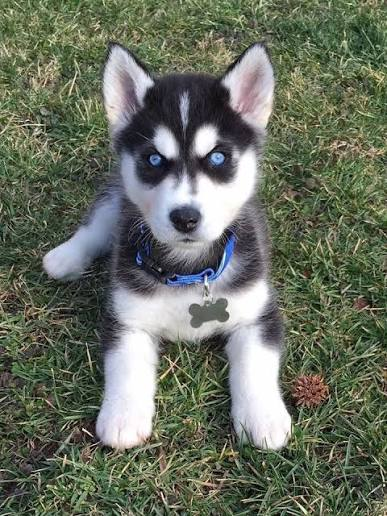
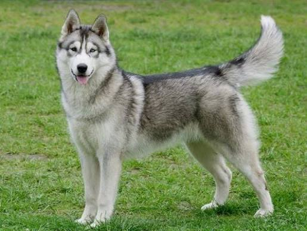

El Husky Siberiano es una raza originaria del noreste de Siberia, Rusia. Fue criado originalmente por el pueblo chukchi, que utilizaba estos perros para tirar de trineos y transportar personas y materiales en grandes distancias. Es un perro de tamaño mediano, de aspecto atlético y ligero. Tiene un pelaje abundante formado por dos capas, lo que le permite soportar temperaturas extremadamente bajas. Puede presentar diferentes colores, como blanco, negro, gris, rojo y combinaciones entre ellos. Una de sus características más conocidas son sus ojos, que pueden ser azules, marrones o incluso presentar un ojo de cada color. También posee una cola muy peluda y orejas erguidas. El Husky es generalmente activo, inteligente, sociable y curioso, aunque también puede ser bastante independiente. Tiene mucha energía y necesita actividad física frecuente. Además, es conocido por su capacidad para correr largas distancias. Su principal función histórica fue el transporte mediante trineos, especialmente en lugares con climas muy fríos. Actualmente se encuentra principalmente como perro de compañía y también participa en actividades deportivas. Esperanza de vida: aproximadamente 12-14 años.
